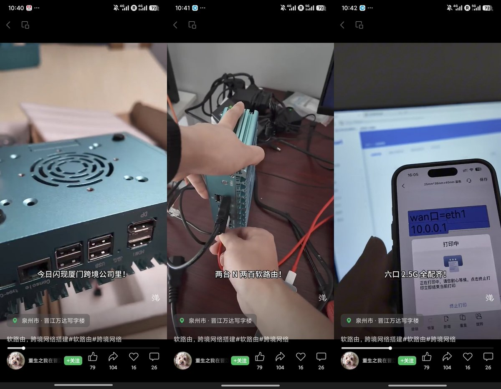
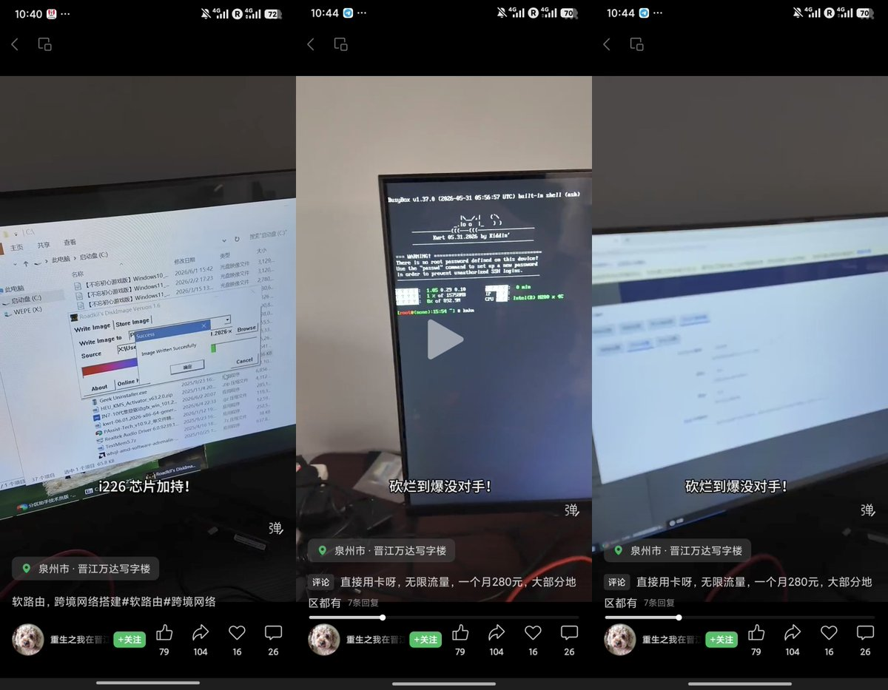
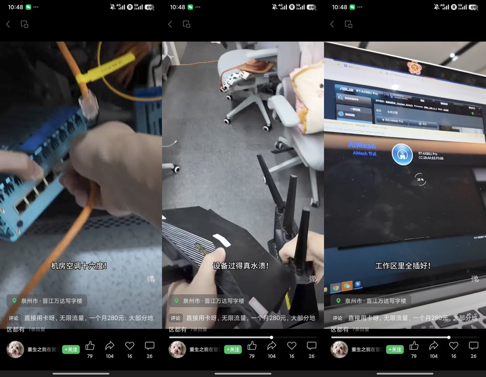
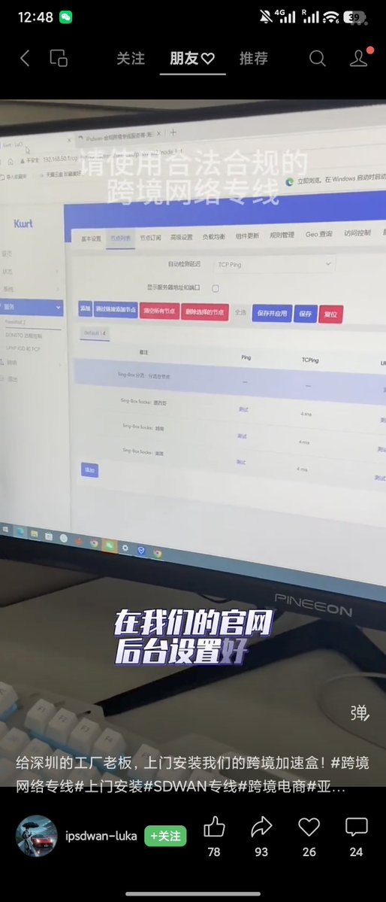
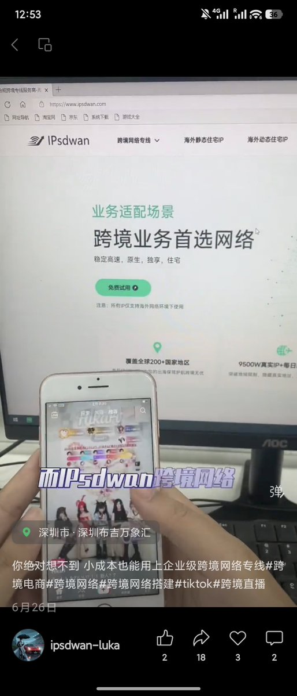

这个Kwrt固件可在线编译，但不知道为啥会偷偷后台跑p，比起其他OpenWrt固件似乎这些“跨境专线”都爱用这套方案
比起深圳那家用硬路由刷OP的，这家不仅用Intel N200，还给人家打标到机房上架，工区还配华硕AX86U
不得不说，还是福建卖翻墙的比广东的良心一点，有业务需要可以找他们吧？出了事还有售后

比起深圳那家用硬路由刷OP的，这家不仅用Intel N200，还给人家打标到机房上架，工区还配华硕AX86U
不得不说，还是福建卖翻墙的比广东的良心一点，有业务需要可以找他们吧？出了事还有售后





在中国，只要你会搭VPN机场、会搞OpenWrt、会配置PassWall2翻墙插件
你就可以把自己的翻墙大业包裹成“跨境专线SDWAN”对外销售了，客户买15Mbps的“专线”测速有14Mbps就不错了 https://t.co/RET1nsyNoP
你就可以把自己的翻墙大业包裹成“跨境专线SDWAN”对外销售了，客户买15Mbps的“专线”测速有14Mbps就不错了 https://t.co/RET1nsyNoP